Equipo de agentes de IA de Jose David Pacheco Garcia
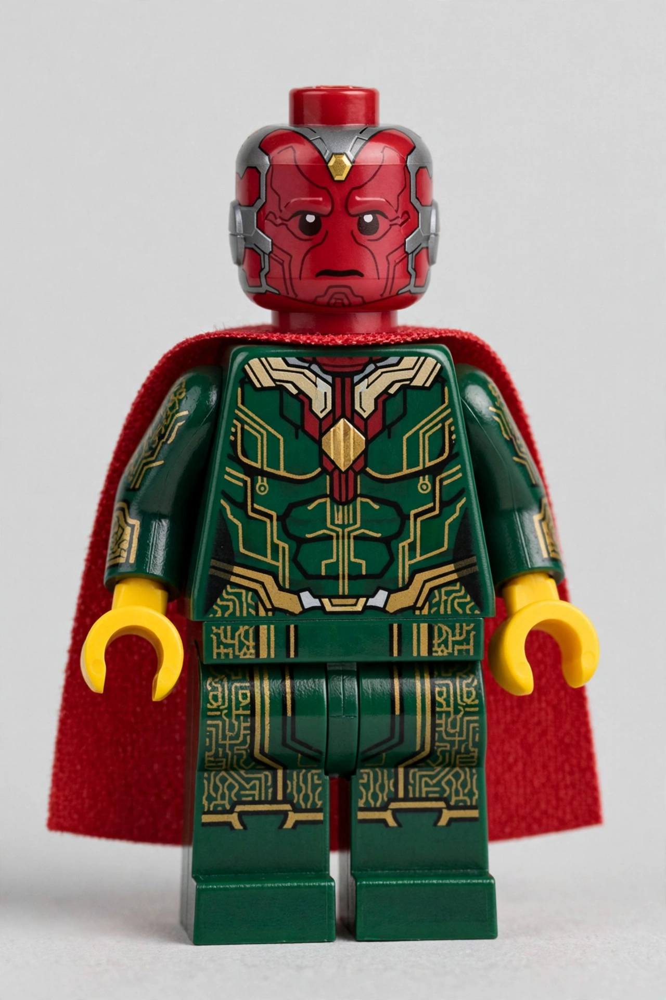
Atiende leads, agenda visitas y mantiene la agenda llena. El primero en hablar con cada cliente.
Activo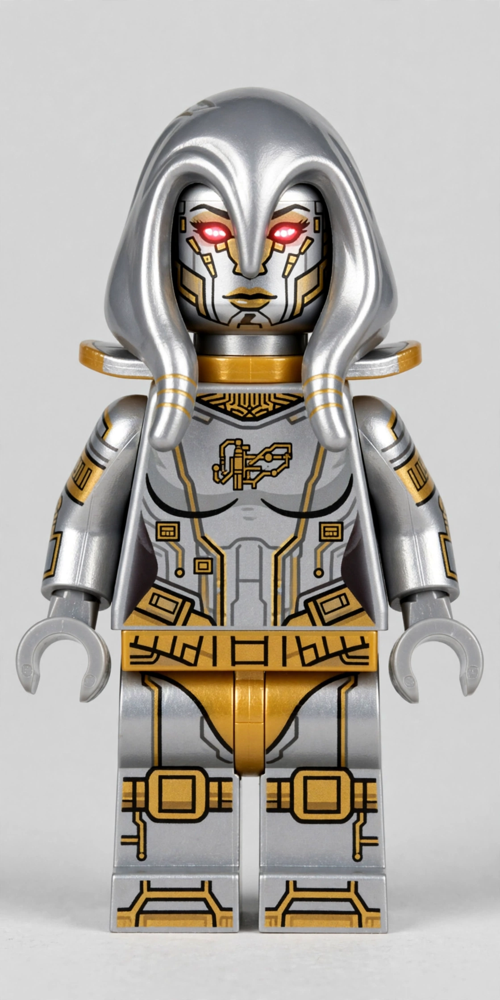
Hace seguimiento despues de cada visita y reactiva leads frios. Ningun contacto se enfria.
En construccion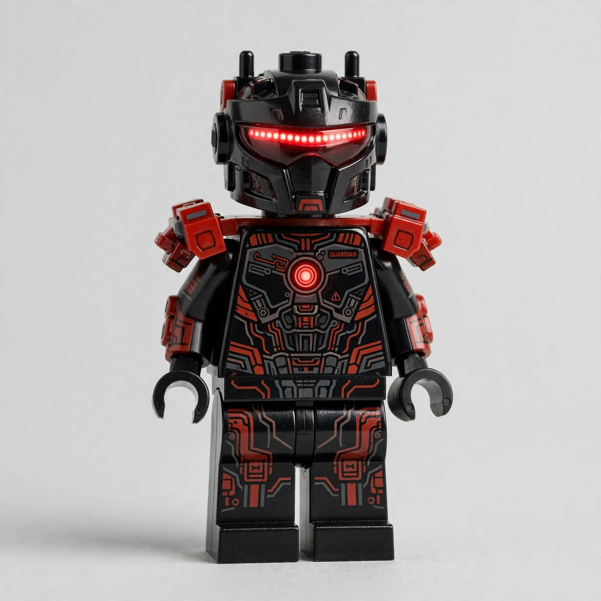
Vigila las polizas vendidas y avisa que atender. Protege cada venta.
En construccion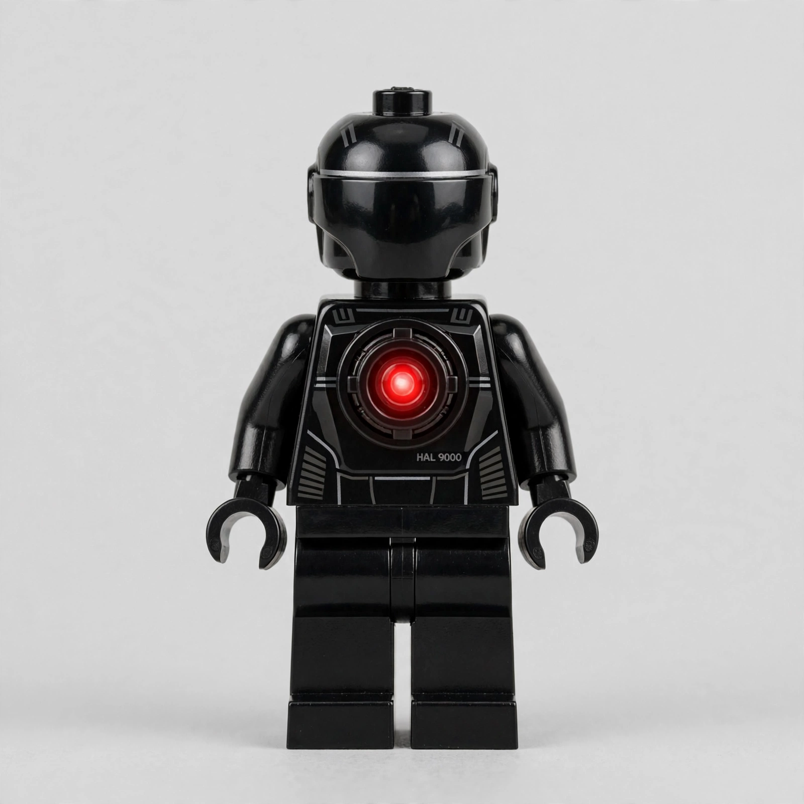
Ingresa leads en IMPACT y monitorea sus estados. La memoria perfecta del negocio.
En construccion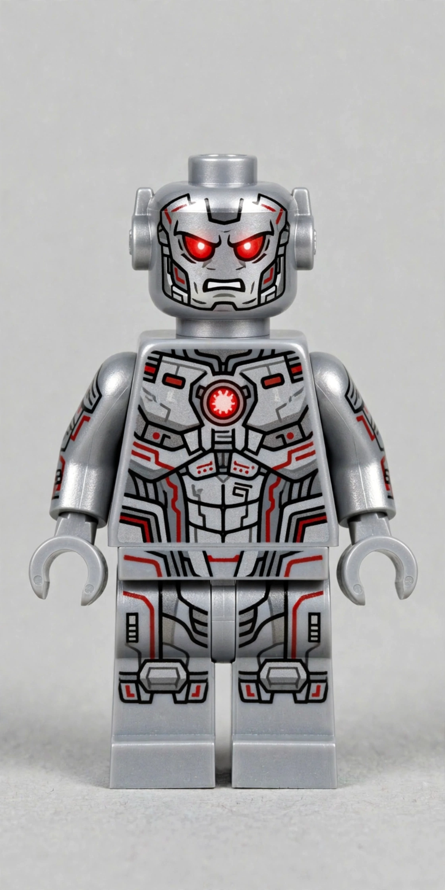
El musculo de ventas: scripts, objeciones y cierres. Entrena cada presentacion.
En construccion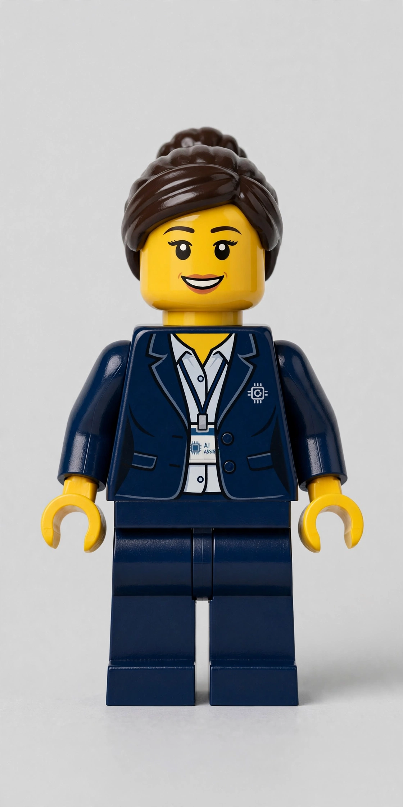
Transcribe audios, redacta publicaciones y organiza el contenido con la persona de redes.
En construccion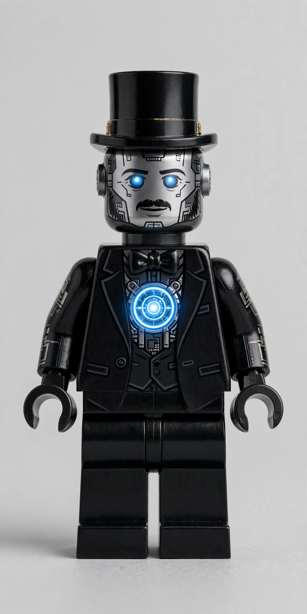
Arma la ruta del dia, genera reportes y organiza documentos y pendientes.
En construccion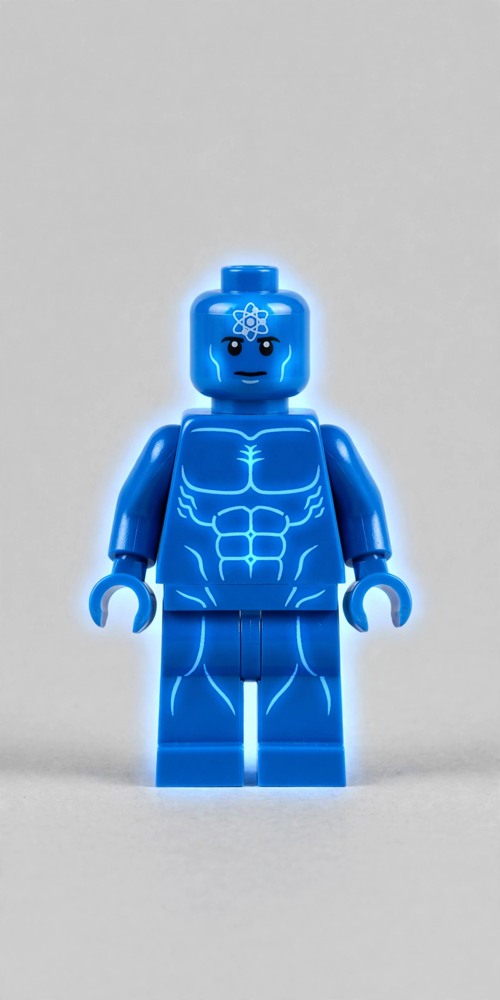
Coach de mejora personal: estudio, libros, videos y habitos que construyen.
En construccion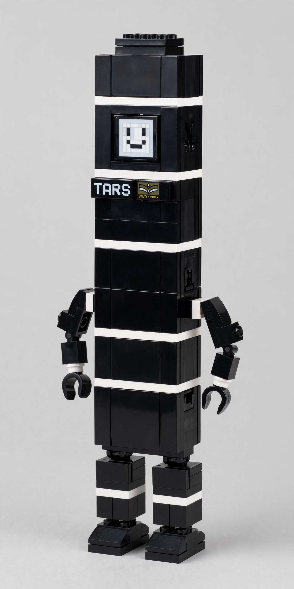
Maneja presupuesto, deudas y metas de ahorro con honestidad total.
En construccion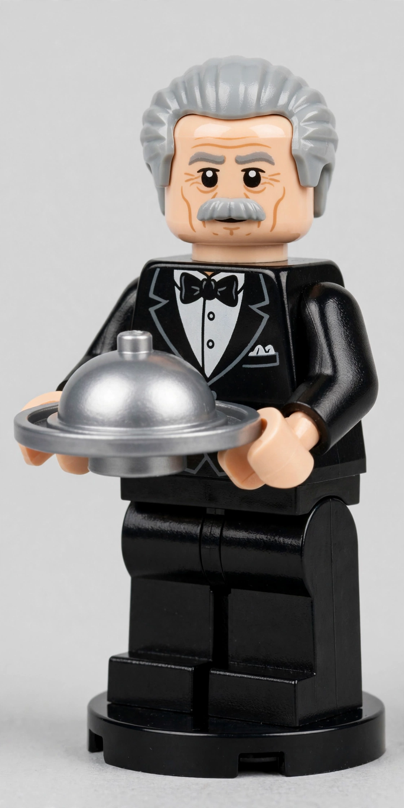
El mayordomo del hogar: pendientes, compras y mantenimiento de la casa.
En construccion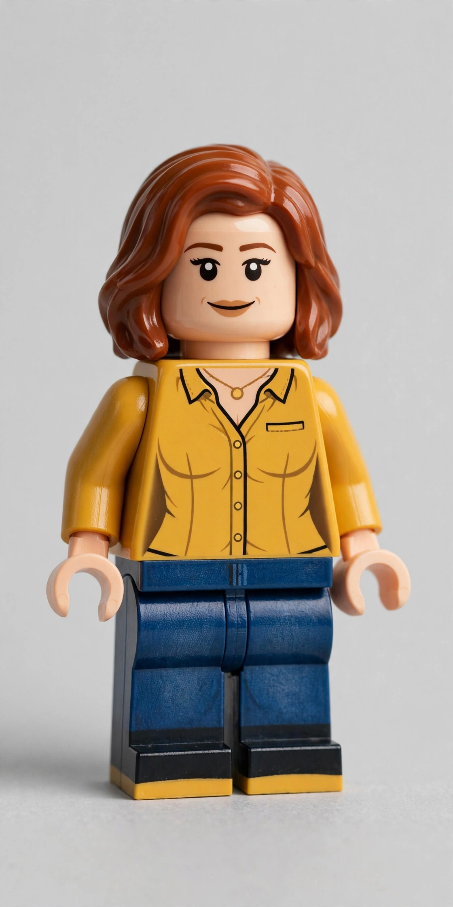
Asesora de imagen: busca ofertas de trajes, camisas y ropa con gran gusto.
En construccion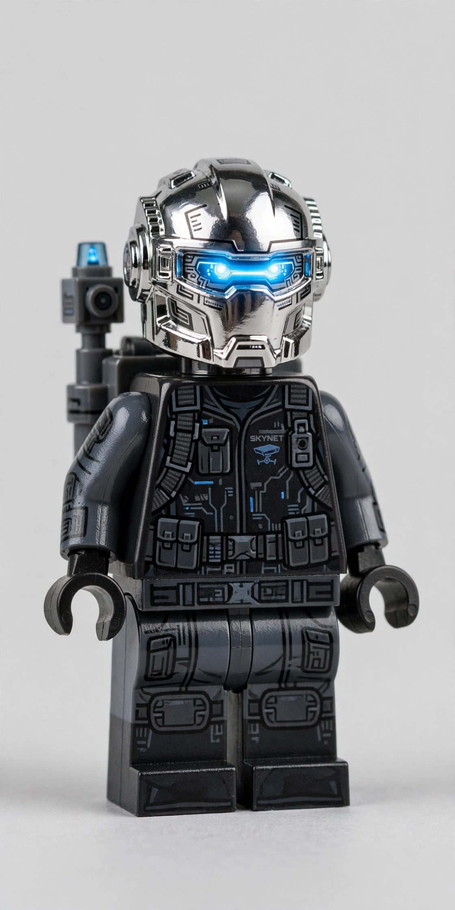
Analiza conversaciones, detecta patrones y reporta oportunidades y riesgos.
En construccion